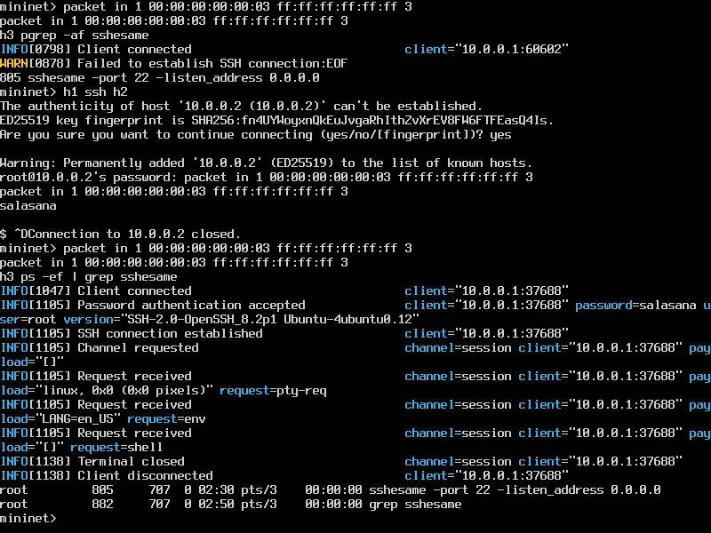
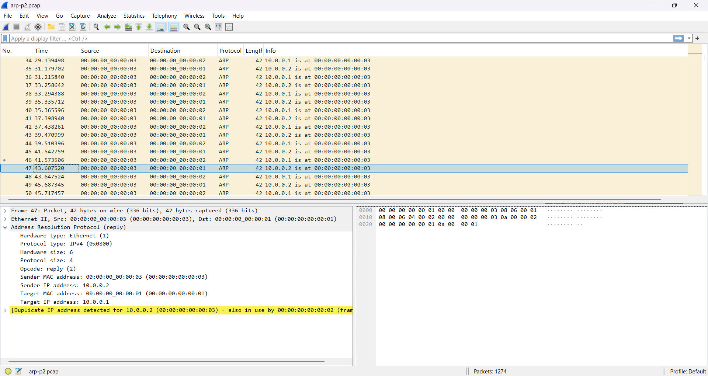
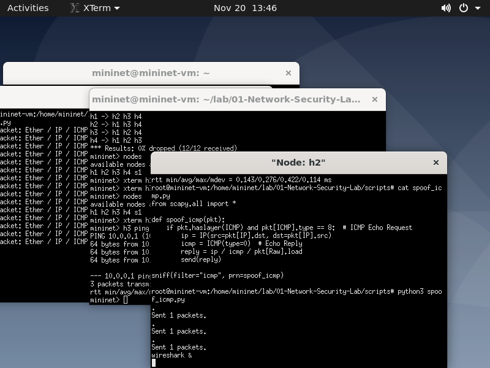

Aluksi käynnistin Larin ohjeiden mukaisesti verkko-ohjaimen: ryu-manager ryu.app.simple_switch_13 & ja loin kolme tietokonetta ja kytkimen komennolla: sudo mn --topo single,3 --mac --switch ovsk --controller remote. Tarkistin verkon toiminnan komennolla: pingall ja kaikki vaikutti olevan kunnossa.
Tämän jälkeen tarkistin h1:n ARP-taulun komennolla: h1 arp -n.
Otin h3-koneella IP-pakettien välityksen käyttöön komennolla: h3 sysctl -w net.ipv4.ip_forward=1.
Seuraavaksi lisäsin iptables-säännön, jolla SSH-liikenne ohjataan h3-koneen porttiin 22: h3 iptables -t nat -A PREROUTING -p tcp --dport 22 -j REDIRECT --to-port 22.
Käynnistin verkkoliikenteen tallennuksen tcpdump-ohjelmalla: h3 tcpdump -i h3-eth0 -w arp-p2.pcap &. Tallennuksen tarkoituksena oli tutkia verkkoliikennettä myöhemmin Wiresharkilla.
Seuraavaksi käynnistin SSHesame-palvelun h3-koneen portissa 22: h3 sshesame -port 22 -listen_address 0.0.0.0 &.
Käynnistin ARP-myrkytysohjelman komennolla: h3 python3 ./arp_poison.py > /tmp/arp_poison.log 2>&1 &.
Tämän jälkeen tarkistin uudelleen h1:n ARP-taulun komennolla: h1 arp -n. Huomasin, että sekä h2:n että h3:n IP-osoitteisiin liittyi nyt sama MAC-osoite (00:00:00:00:00:03). Tämä osoitti, että ARP-myrkytys oli onnistunut.

Jatkoin harjoitusta käynnistämällä h2-koneen SSH-palvelimen komennolla: h2 /usr/sbin/sshd.
Poistin h1-koneelta h2-koneen vanhan SSH-avaimen komennolla: h1 ssh-keygen -R h2 ja muodostin uuden SSH-yhteyden h2-koneeseen komennolla: h1 ssh h2.
Yhteyden muodostamisen yhteydessä SSH ilmoitti, ettei palvelimen avainta ollut aiemmin tunnistettu ja kysyi, haluanko hyväksyä uuden avaimen. Vastasin yes. ARP-myrkytyksen seurauksena yhteys ohjautui h3-koneessa toimivaan SSHesame-palveluun alkuperäisen h2-palvelimen sijasta.
Tarkistin, että SSHesame oli käynnissä komennolla h3 ps -ef | grep sshesame ja havaitsin tapahtumat Client connected, Password authentication accepted ja SSH connection established. Näiden perusteella pystyin toteamaan, että SSHesame vastaanotti yhteyden ja kirjautumisyrityksen onnistuneesti.

Lopuksi pysäytin tcpdump-tallennuksen komennolla: h3 pkill tcpdump ja tarkistin tallennetun tiedoston komennolla: h3 ls -lh /home/mininet/arp-p2.pcap. Tallenne oli noin 80 kilotavun kokoinen.
Siirsin tallennetiedoston Windows-koneelle PowerShellin scp-komennolla: scp mininet@192.168.211.128:/home/mininet/arp-p2.pcap "$env:USERPROFILE\Downloads\".
Avasin tallenteen Windowsin Wiresharkissa ja selailin ARP-paketteja.
Avasin yhden paketin ARP-tabin ja näin, että Sender MAC address oli 00:00:00:00:00:03, mutta Sender IP address oli 10.0.0.2. Wireshark-analyysi vahvisti siis, että ARP-myrkytys oli onnistunut ja h3 esiintyi verkossa h2-koneena.

Käynnistin Mininet-verkon komennolla: sudo python3 hub_topo.py. Verkkoon muodostui neljä tietokonetta (h1, h2, h3 ja h4) sekä kytkin. Tarkistin verkon toiminnan komennolla pingall, ja kaikki koneet saivat yhteyden toisiinsa.
Avasin tarvittavat terminaalit komennolla: xterm h1 h2 h3.
Tämän jälkeen tutkin ICMP-liikennettä h1-koneella käynnistämällä tarkkailuohjelman komennolla: python3 sniff_icmp.py. Lähetin h2-koneelta kolme ping-pyyntöä h1-koneelle komennolla: ping -c 3 10.0.0.1.
Seuraavaksi tutkin tiedostoa spoof_icmp.py, joka käyttää Scapy-kirjastoa ICMP-pakettien käsittelyyn. Skripti tunnistaa ICMP Echo Request -paketit ja muodostaa niiden perusteella väärennetyn Echo Reply -vastauksen.

Käynnistin ICMP-huijausskriptin h2-koneella komennolla: python3 spoof_icmp.py. Tämän jälkeen lähetin h3-koneelta kolme ping-pyyntöä h1-koneelle. Skriptin tulosteessa näkyi kolme kertaa ilmoitus "Sent 1 packets.", mikä osoitti, että skripti lähetti väärennettyjä paketteja.

Tämän jälkeen avasin Wiresharkin h2-koneella ja valitsin tarkkailtavaksi verkkoliitännäksi h2-eth0. Rajasin ICMP Echo Reply -paketit seuraavalla näyttösuodattimella: icmp.type == 0 && eth.src == ae:09:be:40:71:53.
Wiresharkista löytyi kolme ICMP Echo Reply -pakettia. Pakettien IP-lähdeosoitteena näkyi 10.0.0.1 eli h1-koneen osoite, mutta Ethernet-kehyksen lähdeosoite oli ae:09:be:40:71:53 eli h2-koneen MAC-osoite.
Tämä osoitti, että h2 lähetti ICMP-vastauksia käyttäen h1-koneen IP-osoitetta lähdeosoitteena. Väärennetyt paketit pystyttiin tunnistamaan vertailemalla niiden IP- ja MAC-osoitteita.

Käynnistin harjoituksen mininetissä komennolla: sudo python3 hub_topo.py. Verkkoon muodostui neljä tietokonetta ja kytkin. Tarkistin verkon toiminnan komennolla: pingall ja kaikki koneet saivat yhteyden toisiinsa.
Avasin harjoituksessa tarvittavat terminaalit komennolla: xterm h1 h2 h3. Harjoituksessa h1 toimi TCP-palvelimena, h2 asiakkaana ja h3 verkkoliikenteen tarkkailijana.
Seuraavaksi käynnistin h1-koneella TCP-palvelimen komennolla: python3 tcp_server.py. Palvelin jäi odottamaan yhteyksiä porttiin 12345.
Siirryin h2-koneelle ja käynnistin TCP-asiakkaan komennolla: python3 tcp_client.py. Asiakas muodosti yhteyden h1-koneeseen, lähetti viestin "Hello from Host 2" ja vastaanotti h1:n vastauksen "Hello from Host 1". Näin varmistin, että normaali TCP-yhteys toimi.

Tämän jälkeen käynnistin h3-koneella TCP-liikenteen tarkkailun komennolla: python3 sniff_tcp_session.py. Ohjelma tarkkaili verkkoliikennettä ja näytti TCP-pakettien lähde- ja kohdeosoitteet sekä SEQ- ja ACK-numerot.
Muodostin h2-koneelta uuden TCP-yhteyden h1-koneeseen. H3 havaitsi yhteyden liikenteen, minkä ansiosta pystyin tarkastelemaan TCP-istunnon tietoja.

Jatkoin tutkimusta avaamalla tallennetun liikenteen Wiresharkissa. Tarkastelin TCP-paketteja ja niiden järjestys- ja kuittausnumeroita (Sequence Number ja Acknowledgment Number). Huomasin myös, että TCP-paketin sisältämän datan pituus oli 17 tavua ja sitä seurannut kuittausnumero oli 18. Tämä havainnollisti, miten TCP pitää kirjaa lähetetystä datasta ja sen vastaanottamisesta.

Seuraavaksi tutkin tiedostoa tcp_hijack.py, joka sisältää TCP-istunnon kaappaamiseen tarkoitetun ohjelman. Ohjelman tarkoituksena on lähettää väärennetty TCP-paketti, jossa hyökkääjä esiintyy alkuperäisen yhteyden toisena osapuolena.
Suoritin h3-koneella ohjelman komennolla: python3 tcp_hijack.py. Ohjelma ilmoitti lähettäneensä yhden väärennetyn TCP-paketin. H1-koneen palvelimessa ei kuitenkaan näkynyt väärennetyn viestin vastaanottamista.

TCP-istunnon kaappaus ei siis onnistunut tässä testissä. Yksi mahdollinen syy oli se, että aiempi TCP-yhteys oli jo sulkeutunut. Lisäksi ohjelmassa valmiiksi määritellyt portti- ja SEQ/ACK-numerot eivät välttämättä vastanneet tarkkailemaani TCP-yhteyttä.